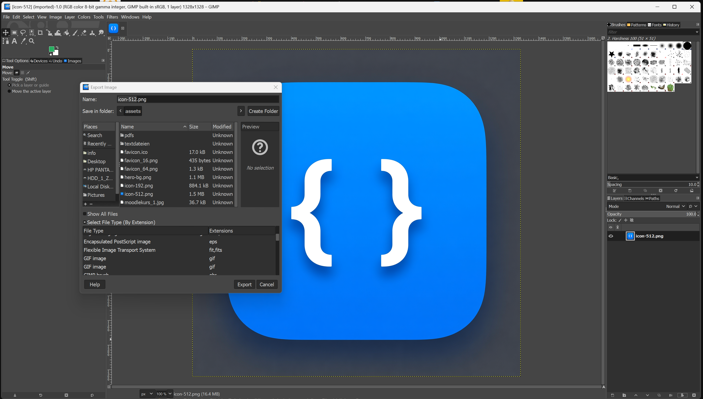

📤 GIMP – Export & Formate
So bereitest du Bilder perfekt für Web und Präsentation vor
⚠️ 1. Speichern ≠ Exportieren!
GIMP speichert standardmäßig im Format .xcf – das ist nur für die Bearbeitung gedacht.
Diese Dateien sind groß und werden von Browsern oder anderen Programmen nicht angezeigt!
⚠️ Niemals .xcf fürs Web verwenden!
→ Nutze stattdessen „Exportieren als…“.
→ Nutze stattdessen „Exportieren als…“.
📊 2. Welches Format wofür?
Die Wahl des richtigen Formats entscheidet über Qualität, Größe und Einsatzbereich:
| Format | Vorteile | Nachteile | Verwendung |
|---|---|---|---|
| PNG | Transparenz, verlustfrei, scharfe Kanten | Größere Datei als JPG | Logos, Icons, Screenshots |
| JPG | Kleine Datei bei Fotos | Keine Transparenz, Qualitätsverlust | Fotogalerien, Hintergrundbilder |
| WebP | 30 % kleiner als JPG/PNG, unterstützt Transparenz | Ältere Browser (IE) nicht kompatibel | Modernes Web – überall wo möglich einsetzen! |
🛠️ 3. So exportierst du richtig
- Gehe zu Datei → Exportieren als…
- Wähle den Speicherort und gib einen Namen ein (z. B.
mein-logo.png) - Klicke auf Exportieren
- Im nächsten Fenster stellst du ggf. die Qualität ein (bei JPG: 70–80 %)
- Klicke erneut auf Exportieren

⚖️ 4. Qualität vs. Dateigröße
Besonders bei JPG musst du einen Kompromiss finden:
- 100 %: Fast keine Kompression – sehr große Datei
- 80 %: Guter Kompromiss – kaum sichtbarer Qualitätsverlust
- 50 %: Starke Kompression – sichtbare Artefakte
💡 Tipp: Für Webseiten reichen meist 70–80 % völlig aus!
Teste: Öffne das Bild in Originalgröße – siehst du unschöne Blockbildung?
Teste: Öffne das Bild in Originalgröße – siehst du unschöne Blockbildung?
🌐 5. Verwendung im Web
Nach dem Export kannst du das Bild in deine HTML-Seite einbinden:
<!-- Transparentes Logo -->
<img src="logo.png" alt="Mein Logo">
<!-- Foto -->
<img src="foto.jpg" alt="Mein Foto">